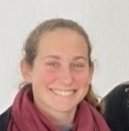
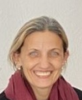

Bachiller en Comunicación o Emprendedor/a. Formamos jóvenes listos para el futuro.
El Nivel Secundario del Instituto Santiago Ramón y Cajal ofrece dos orientaciones de Bachiller que preparan a los jóvenes para la universidad, el mundo laboral y el emprendimiento.
Con Centro de Estudiantes activo, viajes educativos y una comunidad unida, el secundario del Cajal es mucho más que un título.
Un equipo comprometido que trabaja cada día para que la experiencia educativa de nuestros alumnos sea excepcional.
Directora del Instituto
🏫 Dirección
Secretaría Institucional
📋 Secretaria
Asistente Técnica
🏫 GestiónPreceptor
📚 PreceptoríaPreceptora
📚 PreceptoríaPreceptor
📚 PreceptoríaContactanos y te brindamos toda la información sobre el Nivel Secundario.
Consultá ahora →